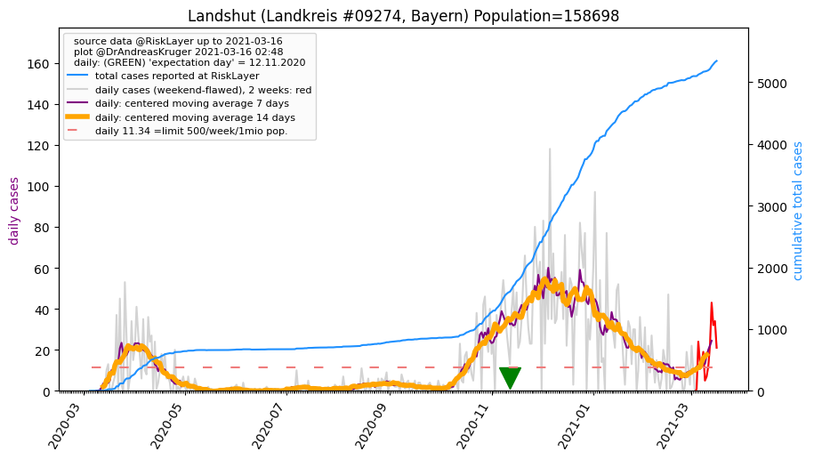
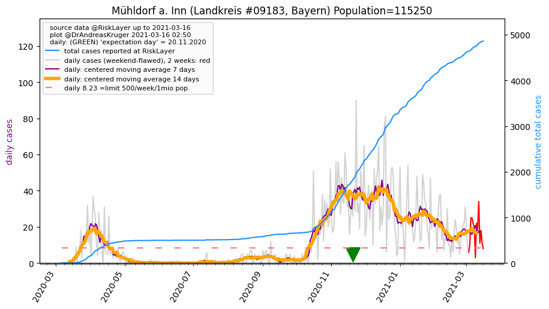
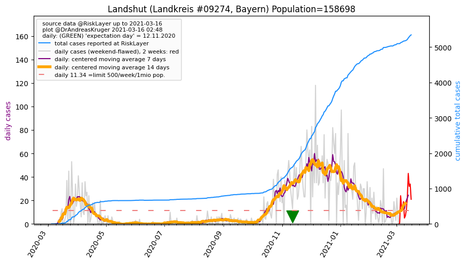
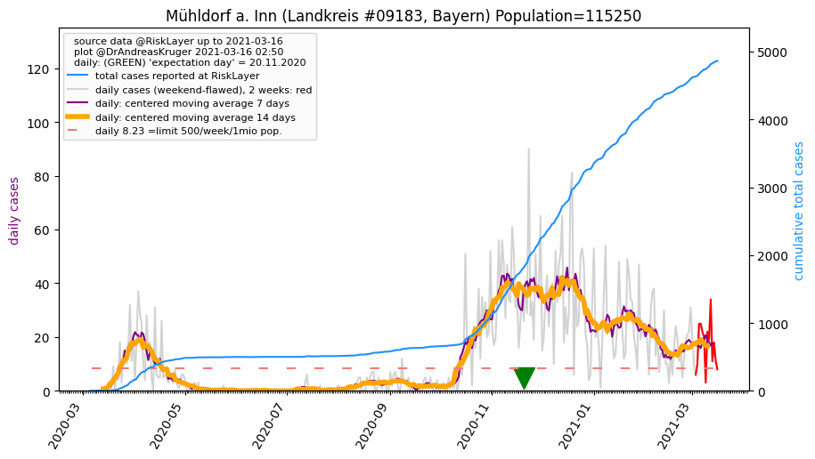

")
")
")
")

")
")

")
| Dingolfing-Landau_LK (0.0 km) |
Straubing_KS (26.8 km) |
Straubing-Bogen_LK (28.8 km) |
| Rottal-Inn_LK (30.7 km) |
Landshut_LK (32.0 km)  |
Deggendorf_LK (32.5 km) |
| Landshut_KS (35.0 km) |
Mühldorf a. Inn_LK (47.8 km)  |
Altötting_LK (48.5 km) |
All plots are regenerated with new data every night. Beware this temporary hotspot is an experimental page - it might get removed, so please do not link to it. Instead link to project http://tiny.cc/cov19de.